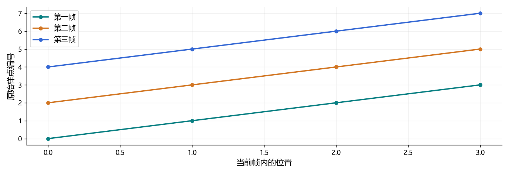

看图理解 · 跟着推演 · 对照真实结果
第16课 · 音频怎样一块块处理：缓存与延迟
把九个样点分三块送入，亲眼追踪重叠帧和必须保留的尾部。
点播放开始；点右侧小节可跳到不懂的部分。进度保存在当前浏览器。
先看视频，再动手
不必先读完正文。跟着视频暂停预测，看到运行图时解释横轴、纵轴和曲线，再做下面的自测。完整图文保留作查阅；视频讲清本课核心算例，不把看完等同于掌握全部专题。
先修：数组切片、采样率、分帧；不要求并发开发经验。
- 正确实现跨块重叠分帧
- 区分输入块、窗长和帧移
- 解释 RTF、首包延迟与轮次取消
跟着运行：注释代码、实际输出与结果图
下面代码在生成本站时实际执行。这里只是教学小实验，不是完整模型训练或业务设备测评。
import numpy as np
# 用缩小的样点编号观察缓存，不是真实波形
size, hop = 4, 2
buffer = np.empty(0)
frames = []
for chunk in [np.arange(3), np.arange(3, 6), np.arange(6, 9)]:
buffer = np.concatenate([buffer, chunk])
while len(buffer) >= size:
frames.append(buffer[:size].copy())
buffer = buffer[hop:] # 只前进帧移，保留重叠
matrix = np.stack(frames)
position = np.arange(size)
first, second, third = matrix
for i, frame in enumerate(matrix):
print("帧", i+1, frame.astype(int).tolist())
print("余量", buffer.astype(int).tolist())
assert matrix.shape == (3, 4)
本次实际输出
帧 1 [0, 1, 2, 3] 帧 2 [2, 3, 4, 5] 帧 3 [4, 5, 6, 7] 余量 [6, 7, 8]

闭卷自测：窗长 4、帧移 2，三块 [0,1,2]、[3,4,5]、[6,7,8] 到达后，完整帧和余量是什么？
完整帧为 [0,1,2,3]、[2,3,4,5]、[4,5,6,7]；保留 [6,7,8]，尾部策略需另行指定。
逐字讲稿 · 可定位回看
离线读整段音频时，所有样点已经在内存。实时声卡却一次只送一小块，如果你每次都重建缓存或滤波器状态，连续声音会在边界被人为切断。
输入块由采集接口决定，分析窗和帧移由算法决定，它们不必相等。要用缓存连接两种节奏，而不是强迫每收到一块就恰好输出一帧。
本课把真实数百样点缩成编号零到八，分成三块到达。我们能在屏幕上跟踪每个数字被哪一帧使用，最后再把逻辑放回实际采样率。
采样率一万六千赫兹表示每秒一万六千点。声卡二十毫秒回调一次，就是一万六千乘零点零二，等于三百二十点，不是三十二万点。
假设分析窗三十二毫秒，就需要五百一十二点；帧移十毫秒，是一百六十点。第一块三百二十点还凑不够分析窗，所以不能立刻假装已经有完整帧。
第二块到来才有六百四十点，可以先取五百一十二点，再只前进一百六十点。窗口用过的部分仍可能参与下一帧，因此不能整窗删除。
现在窗长改成四，帧移改成二，输入每次三点。第一块是零、一、二，缓存长度三，比窗长四少一个，因此这一轮输出零帧。
等待不等于程序失败。算法没有拿到足够的信息，就应保留这三个样点。若每个回调都把不足一帧的尾部丢掉，永远凑不成正确的跨块窗口。
也不要每次不足就自动补零，除非这是明确设计并验证过的边界策略。否则连续录音中间会被插入不属于真实声音的空白，影响特征与模型输出。
第二块三、四、五接上后，缓存是零到五。先取前四个，得到第一帧零、一、二、三。只前进两点，缓存剩二、三、四、五。
剩下四点还够一帧，因此继续取第二帧二、三、四、五。再前进两点，留下四、五，才结束这一轮。这就是代码必须循环检查，而不是只执行一次的原因。
样点二和三同时出现在前两帧，是我们需要的重叠，不是重复读取的错误。第一块零帧、第二块两帧，也说明输入块和输出帧不能按数量强行一一配对。
第三块六、七、八到来，接上四、五，得到五点。取出四、五、六、七形成第三帧，再前进两点，留下六、七、八。现在又不足四点。
这三个数字里，六和七已经在上一帧用过，但它们还需要参与下一帧，所以仍保留。八还没有进入任何完整窗，随意清空会让尾部内容消失。
如果录音还会继续，就等待下一块。如果确定录音结束，需要明确补零完成最后一窗还是丢弃不足窗，并记录这个规则。两种选择影响边界，不能假装没有区别。
代码先创建空缓存和帧列表，然后依次送入三组数字。拼接保证本轮数据接在上轮剩余之后，而不是覆盖历史。这里的数据是样点编号，只为了看清位置。
循环条件是缓存至少四点。切片取前四点，加 copy 保存这一帧的快照；再通过 buffer 等于 buffer 从 hop 往后，前进两点并保留重叠。
最后把三帧堆成三行四列矩阵，每行单独画一条线。这个演示容易理解，但反复拼接和分配内存不适合严格实时回调，工程实现常改成预分配环形缓存。
横轴是窗内位置零到三，纵轴是原始样点编号。三条线依次从零、二、四开始，说明每次帧起点只前进两点，符合帧移而不是窗长。
比较第一条末尾的二、三与第二条开头的二、三，就能看到重叠。打印尾部是六、七、八，最后的八尚未进入完整分析窗，验证了边界解释。
本图没有测声音质量或运行速度，它证明的是分块下标逻辑。接入真实音频后，还需要验证窗函数、重叠相加、模型状态及最终输出长度。
十秒录音用两秒计算，实时因子就是零点二，平均算得比声音到达快。但如果必须等整段十秒录完才开始，第一字仍然很晚才出现。
延迟还包含凑窗、未来上下文、句末判断、排队、模型计算与播放缓存。测首包时必须写清起点和终点，是用户开口、说完、收到数据，还是扬声器真的播放。
百分之九十五分位延迟不是最慢百分之五请求的平均值。也不能把每个模块的分位数直接相加当系统分位数，应记录同一轮真实事件时间戳再统计。
想象回答播放一半，用户插话，你清空队列后暂时安静了，但旧语音合成任务还在后台跑。一百毫秒后旧音频又回调，若直接接收，旧回答就重新开始。
一种明确的逻辑是给每轮任务编号，新轮次开始就递增，所有结果回调先检查编号。旧编号一律拒收，同时取消旧计算、处理声卡已排队声音，不能只做其中一步。
队列还应有上限和背压，避免生成一直快于播放而无限积压。真正识别用户插话又是另一个问题，需要回声消除和语音活动判断，状态正确不代表检测准确。
自测：三百二十点在十六千赫兹下是多长？三百二十除以一万六千等于零点零二秒，也就是二十毫秒。每次换采样率都重新算，别沿用旧块时长。
如果回答越来越晚，先记录生成、入队、出队、播放时间和队列深度。生成稳定而队列变长，更可能是消费速度或背压；旧轮次重新入队则是取消逻辑问题。
动手作业把三点输入块改成两点，完整输出帧应仍对应同一连续序列。能证明不同投递切法不改变算法结果，再去优化性能，项目就有了可靠的回归测试。
适用边界与参考正文
代码只验证数组缓存，不是可上线实时音频回调；没有测量设备延迟、并发、量化或真实模型推理。
图、公式、代码结果均由本站制作；旁白是本地中文语音合成，不是教师真人录音，也不是 NotebookLM 生成。没有向 Google 上传项目材料。